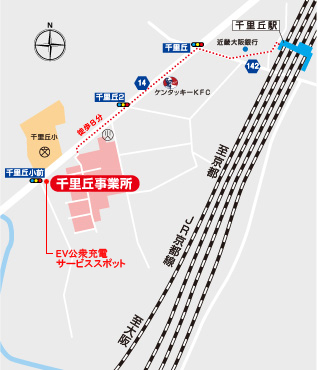
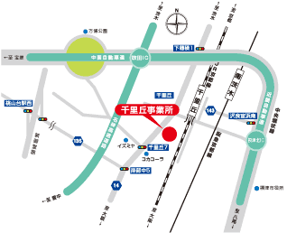

〒566-8686大阪府摂津市千里丘3丁目14-40 TEL 06-6387-1181 FAX 06-6389-0577

〒566-8686大阪府摂津市千里丘3丁目14-40TEL 06-6387-1181 FAX 06-6389-0577
■高速道利用の場合 ●中国、名神道より 吹田出口を出て中央環状線（府道２号線）を茨木・守口方面へ 下穂積交差点を右折して（府道１４号線）を南へ約２．５ｋｍ ●近畿道より 摂津北I.Cを出て中央環状線の沢良宜浜南交差点を左折 千里丘駅前で左折してＪＲ線を潜り千里丘交差点を左折、 府道１４号線を南へ約４５０ｍ ■一般道利用の場合 ●大阪方面より 新御堂筋（国道４２３号線）を北進、桃山台で側道に出て桃山台駅西を右折 府道１３５号線をしばらく走り、岸辺中５交差点を左折 （府道１４号線）を北へ約７００ｍ ●京都方面より 国道１７１号線 畑田交差点を左折して府道１４号線を南へ約４．５ｋｍ
詳細の広域を見たい方はGoogleマップをご利用ください。